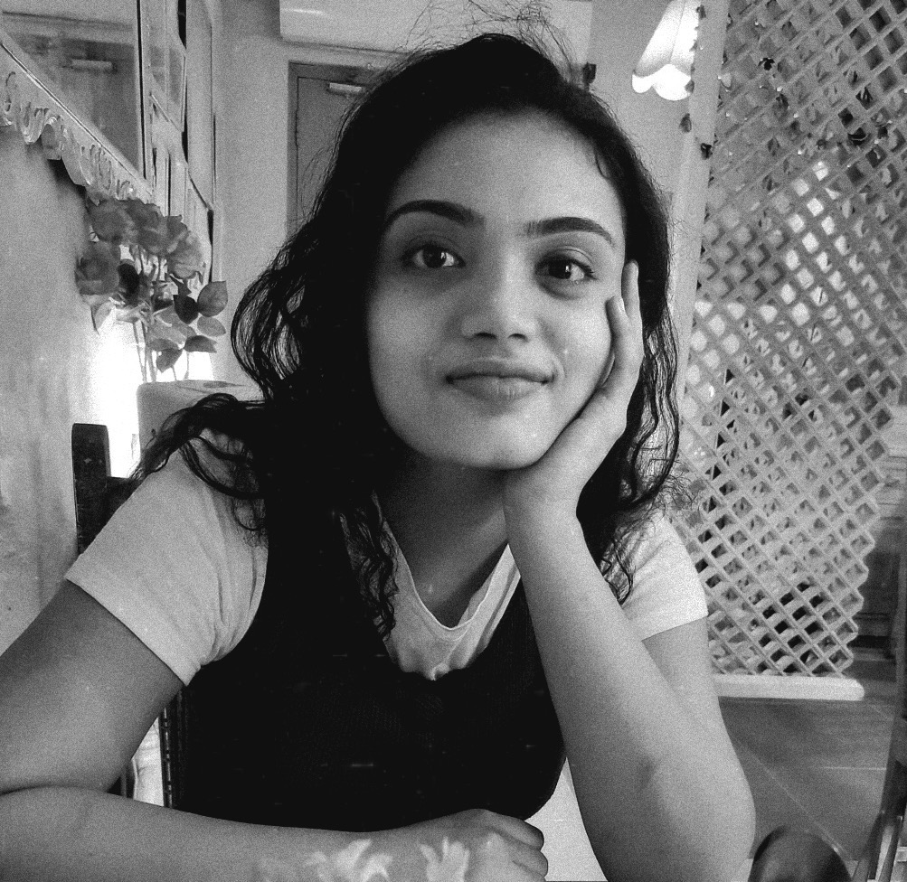

Political Bias Detection in News Media
Built a Retrieval-Augmented Generation pipeline analysing 1,000+ political news articles.
View project →From political philosophy to machine learning — still asking the same questions, just with better tools.

A few things I’ve tried to understand with data.
Built a Retrieval-Augmented Generation pipeline analysing 1,000+ political news articles.
View project →Analysed demographic change across 300+ UK local authorities.
View project →Interactive diversity ranking of FTSE 100 firms using transparent scoring logic, min-max normalisation, and explainable indicator weighting.
Live app → · Code →Mapped cinema accessibility using OpenStreetMap data.
View project →